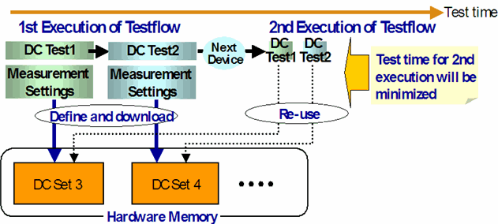

DC set management
Every DC test stores its measurement parameters in a DC set, which is identified by a number. All those DC tests that (can) define a PPMU test use a common pool of DC sets, which are stored in the Sequencer Memory: if the firmware commands they issue specify the same DC set number, they refer to the same object.
DC set pools are managed by SmarTest in the following way.
The basic features of this method are:
- Download the parameters only once, at the first execution of the testflow, and to reuse them for the following loop repetitions.
- Provide every DC test within a testflow with its own dedicated DC set so that the parameters
of all tests are available for the second and all following loop repetitions (devices).Note Some of the test methods that define a PPMU test refine the second principle by introducing DC tasks and measurement sets, see Using DC Sets Economically: DC Sets and Measurement Sets.
The dedicated DC sets have a number > 2 (> 1 for SPMU_TASK DC sets). DC sets 1 and 2 (1 for SPMU_TASK DC sets) are reserved for emergency situations (see below).
The following figure illustrates the principle, and also indicates the throughput improvement provided by the optimization:

Note the following restrictions of this method:
- Every parameter definition of a PPMU test is stored in the DC set as an individual action.
There is a maximum total number of all actions in all DC sets that are defined for the DC set
pool used by PPMU tests. This maximum is specified with the m_sets
parameter of the .technology file, which is located in the main directory
of the device. If this maximum is exceeded, testflow execution is canceled. In this case,
increase the number by editing the technology file with an ASCII editor. By default,
m_sets is set to 1028. The maximum value that can be specified is 12800.
You can also change the runtime value of the maximum number of actions with the DSCP firmware command. But be aware that this does not change the value in the .technology file.
- The maximum number of DC sets that can be created in this way for one DC set pool is 256. If a testflow contains more than 256 DC sets that use the same pool, the parameters for the 257th and all following DC sets of the respective type are stored in DC set 1 (and 2, if available) according to the first method. Consequently, these parameters must be downloaded for every loop repetition.
Functional changes
- Introduced before SmarTest 6.3.2
- SmarTest 7.0.0: 256 DC sets supported per DC set pool.
- SmarTest 7.0.3: Standard test functions are not supported.